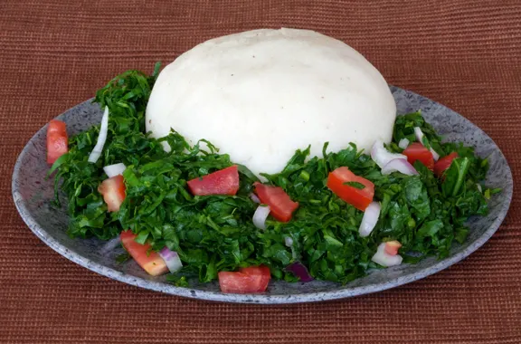

Ugali & Sukuma Wiki
⏱ 30 mins
🍽 Serves 1–2
💰 Ksh 50 - 100 Budget Friendly

Ingredients
- 2 cups maize flour
- Water
- 1 bunch sukuma wiki
- Onion
- Oil & salt
Instructions
- Boil water and gradually add maize flour.
- Stir until firm to form ugali.
- Fry onions, add sukuma, salt and cook.
- Serve hot.